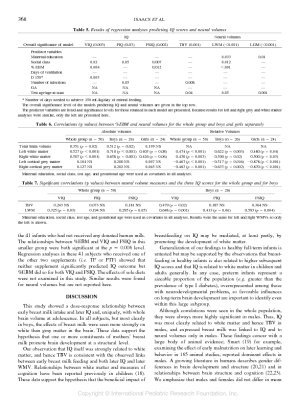

Publications
A record of my research work, in reverse chronological order

|
Intracranial cortical responses during visual-tactile integration in humans. Quinn BT, Carlson C, Doyle W, Cash SS, Devinsky O, Spence C, Halgren E, Thesen T. J Neurosci. 2014 Jan 1;34(1):171-81. |

|
Default mode network abnormalities in idiopathic generalized epilepsy. McGill ML, Devinsky O, Kelly C, Milham M, Castellanos FX, Quinn BT, DuBois J, Young JR, Carlson C, French J, Kuzniecky R, Halgren E, Thesen T. Epilepsy Behav. 2012 Mar;23(3):353-9. |

|
Structural evidence for involvement of a left amygdala-orbitofrontal network in subclinical anxiety. Blackmon K, Barr WB, Carlson C, Devinsky O, Dubois J, Pogash D, Quinn BT, Kuzniecky R, Halgren E, Thesen T. Psychiatry Res. 2011 Jul 29. |

|
Detection of epileptogenic cortical malformations with surface-based MRI morphometry. Thesen T, Quinn BT, Carlson C, Devinsky O, DuBois J, McDonald CR, French J, Leventer R, Felsovalyi O, Wang X, Halgren E, Kuzniecky R. PLoS One. 2011 Feb 4;6(2):e16430. |

|
Hyperfamiliarity for faces. Devinsky O, Davachi L, Santchi C, Quinn BT, Staresina BP, Thesen T. Neurology. 2010 Mar 23;74(12):970-4. |

|
Prolonged institutional rearing is associated with atypically large amygdala volume and difficulties in emotion regulation. Tottenham N, Hare TA, Quinn BT, McCarry TW, Nurse M, Gilhooly T, Millner A, Galvan A, Davidson MC, Eigsti IM, Thomas KM, Freed PJ, Booma ES, Gunnar MR, Altemus M, Aronson J, Casey BJ. Dev Sci. 2010 Jan 1;13(1):46-61. |
|  | Impact of breast milk on intelligence quotient, brain size, and white matter development. Isaacs EB, Fischl BR, Quinn BT, Chong WK, Gadian DG, Lucas A. Pediatr Res. 2010 Apr;67(4):357-62. |

|
Regional white matter volume differences in nondemented aging and Alzheimer's disease. Salat DH, Greve DN, Pacheco JL, Quinn BT, Helmer KG, Buckner RL, Fischl B. Neuroimage. 2009 Feb 15;44(4):1247-58. Epub 2008 Nov 5. |

|
The effect of early human diet on caudate volumes and IQ. Isaacs EB, Gadian DG, Sabatini S, Chong WK, Quinn BT, Fischl BR, Lucas A. Pediatr Res. 2008 Mar;63(3):308-14. |

|
Feasibility of multi-site clinical structural neuroimaging studies of aging using legacy data. Fennema-Notestine C, Gamst AC, Quinn BT, Pacheco J, Jernigan TL, Thal L, Buckner R, Killiany R, Blacker D, Dale AM, Fischl B, Dickerson B, Gollub RL. Neuroinformatics. 2007 Winter;5(4):235-45. Epub 2007 Nov 13. |

|
Volumetric cerebral characteristics of children exposed to opiates and other substances in utero. Walhovd KB, Moe V, Slinning K, Due-Tønnessen P, Bjørnerud A, Dale AM, van der Kouwe A, Quinn BT, Kosofsky B, Greve D, Fischl B. Neuroimage. 2007 Jul 15;36(4):1331-44. Epub 2007 Apr 25. Erratum in: Neuroimage. 2008 Jul 15;41(4):1514-6. |
| Neuroimaging H.M.: a 10-year follow-up examination. Salat DH, van der Kouwe AJ, Tuch DS, Quinn BT, Fischl B, Dale AM, Corkin S. Hippocampus. 2006;16(11):936-45. |

|
An automated labeling system for subdividing the human cerebral cortex on MRI scans into gyral based regions of interest. Desikan RS, Ségonne F, Fischl B, Quinn BT, Dickerson BC, Blacker D, Buckner RL, Dale AM, Maguire RP, Hyman BT, Albert MS, Killiany RJ. Neuroimage. 2006 Jul 1;31(3):968-80. Epub 2006 Mar 10. |

|
Orbitofrontal thickness, retention of fear extinction, and extraversion. Rauch SL, Milad MR, Orr SP, Quinn BT, Fischl B, Pitman RK. Neuroreport. 2005 Nov 28;16(17):1909-12. |

|
Selective increase of cortical thickness in high-performing elderly--structural indices of optimal cognitive aging. Fjell AM, Walhovd KB, Reinvang I, Lundervold A, Salat D, Quinn BT, Fischl B, Dale AM. Neuroimage. 2006 Feb 1;29(3):984-94. Epub 2005 Sep 19. |

|
Cortical volume and speed-of-processing are complementary in prediction of performance intelligence. Walhovd KB, Fjell AM, Reinvang I, Lundervold A, Fischl B, Salat D, Quinn BT, Makris N, Dale AM. Neuropsychologia. 2005;43(5):704-13. |
| Sequence-independent segmentation of magnetic resonance images. Fischl B, Salat DH, van der Kouwe AJ, Makris N, Ségonne F, Quinn BT, Dale AM. Neuroimage. 2004;23 Suppl 1:S69-84. |